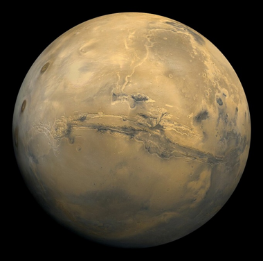
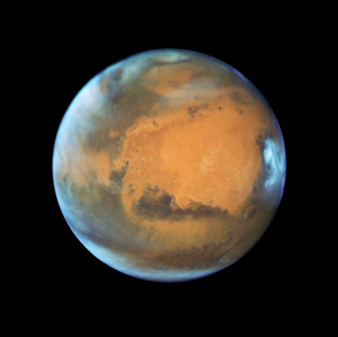

| Перигелий | 2,06655⋅10^8 км 1,381 а. e. |
| Афелий | 2,49232⋅10^8 км 1,666 а. e. |
| Большая полуось (a) | 2,2794382⋅10^8 км 1,523662 а. e. 1,524 земной |
| Эксцентриситет орбиты (e) | 0,0933941] |
| Сидерический период обращения | (продолжительность года) 686,98 земных суток 1,8808476 земного года |
| Синодический период обращения | 779,94 земных суток |
| Орбитальная скорость (v) | 24,13 км/с (средн.) 24,077 км/с |
| Наклонение (i) | 1,85061° (относительно плоскости эклиптики) 5,65° (относительно солнечного экватора) |
| Долгота восходящего узла (Ω) | 49,57854° |
| Аргумент перицентра (ω) | 286,46230° |
| Чей спутник | Солнца |
| Спутники | 2 |
| Полярное сжатие | 0,00589 (1,76 земного) |
| Экваториальный радиус | 3396,2 ± 0,1 км 0,532 земного |
| Полярный радиус | 3376,2 ± 0,1 км 0,531 земного |
| Средний радиус | 3389,5 ± 0,2 км 0,532 земного |
| Площадь поверхности (S) | 1,4437⋅10^8 км² 0,283 земной |
| Объём (V) | 1,6318⋅10^11 км^3 0,151 земного |
| Масса (m) | 6,4171⋅10^23 кг 0,107 земной |
| Средняя плотность (ρ) | 3,933 г/см^3 0,714 земной |
| Ускорение свободного падения на экваторе (g) | 3,711 м/с^2 0,378 g |
| Первая космическая скорость (v1) | 3,55 км/с 0,45 земной |
| Вторая космическая скорость (v2) | 5,03 км/с 0,45 земной |
| Экваториальная скорость вращения | 868,22 км/ч |
| Период вращения (T) | 24 часа 37 минут 22,663 секунды (24,6229 ч) — сидерический период вращения, 24 часа 39 минут 35,244 секунды (24,6597 ч) — длительность средних солнечных суток |
| Наклон оси | 25,1919° |
| Прямое восхождение северного полюса (α) | 317,681° |
| Склонение северного полюса (δ) | 52,887° |
| Альбедо | 0,250 (Бонд) 0,150 (геом. альбедо) 0,170 |
| Видимая звёздная величина | −2,94 |
| На поверхности | от −153 °C до +35 °C |
| по всей планете | 186 К; −87 °C 210 K (−63 °C) 268 К; −5 °C |
| Атмосферное давление | 0,4—0,87 кПа (4⋅10−3—8,7⋅10−3 атм) |
| 95,32 % | углекислый газ2,7 % азот |
| 1,6 % | аргон |
| 0,145 % | кислород |
| 0,08 % | угарный газ |
| 0,021 % | водяной пар |
| 0,01 % | окись азота |
| 0,00025 % | неон |

Изображение Марса на основе 102 снимков, полученных АМС «Викинг-1» 22 февраля 1980 года

Марс во время противостояния 2016 года
После первого облета планеты космическим аппаратом «Маринер-4» в 1965 годубыло высказано предположение, что на поверхности Марса есть вода. Марс является наиболее вероятным местом для обнаружения воды или даже жизни.
Планета названа в честь Марса — древнеримского бога войны, чей щит и копье образуют символ планеты (♂).
Диаметр Марса почти в два раза меньше диаметра Земли. Планета имеет меньшую плотность, чем Земля, занимая лишь 15 % её объёма и только около 11 % её массы. Площадь поверхности Марса почти такая же, как общая площадь земных континентов, а его масса в 10 раз меньше земной. Марс больше и массивнее Меркурия, однако Меркурий плотнее. В результате две планеты имеют почти одинаковое гравитационное притяжение у своей поверхности — разница составляет менее 1 % в пользу Марса. Красновато-коричневый цвет планеты обусловлен присутствием оксида железа(III), более известного как ржавчина. Он может казаться карамельным или других подобных цветов: золотистого, оранжевого, светло-коричневого, зеленоватого — в зависимости от состава минералов на поверхности планеты.
Сутки на Марсe длятся 24 часа, 39 минут и 35,244 секунды, что лишь незначительно отличается от земных суток.
Атмосфера Марса чрезвычайно разрежена: давление на поверхности составляет всего 750 Па (0,75 %, что в 133 раза меньше атмосферного давления Земли). Марсианская атмосфера состоит на 95 % из углекислого газа, 3 % азота, 1,6 % аргона и следов кислорода и воды. Метан был также обнаружен во время наблюдений с Земли в 2003 году. Это открытие было подтверждено в марте 2004 годакосмическим аппаратом «Mars Express». Метан — нестабильный газ. Он разлагается под действием солнечной радиации и некоторых химических веществ. Поэтому его присутствие указывает на то, что существует или существовал в недавнем прошлом механизм его высвобождения, вероятно, расположенный на поверхности планеты. Предполагается, что газ имеет вулканическое происхождение или попал на поверхность в результате столкновения с кометами. Ученые не исключают, что он является продуктом жизнедеятельности метаногенных организмов, но доказательств этому недостаточно. Метан распределен в атмосфере неравномерно в виде облаков, что свидетельствует о том, что он расщепляется и высвобождается относительно быстро. Планируются дальнейшие исследования, чтобы доказать происхождение метана через «сопутствующие газы»: этан, в случае биологической деятельности; или диоксид серы, если происхождение вулканическое.
Атмосфера Марса характеризуется циркуляцией водяного пара от одного полюса к другому, в зависимости от времени года на планете. Это приводит к типично земным атмосферным явлениям, таким как иней и облака.
Полярные шапки Марса содержат замерзшую воду и углекислый газ. Диоксид находится в форме сухого льда и тает во время марсианского лета, обнажая поверхность планеты. Во время марсианской зимы он снова замерзает. На Марсе находится самый высокий вулкан в Солнечной системе — щитообразный Олимп высотой 27 км. Вулкан неактивен, он расположен на обширной равнине Тарсис, где находится ещё несколько вулканов. На Марсе также находится самый большой каньон в Солнечной системе — Долина Маринер. Его длина составляет около 4000 км, а глубина — 7 км. Поверхность планеты усеяна многочисленными метеоритными кратерами, крупнейший из которых — Равнина Эллада, покрытая светло-красным песком.
Нажми ↑ снова или ✕, чтобы закрыть панель